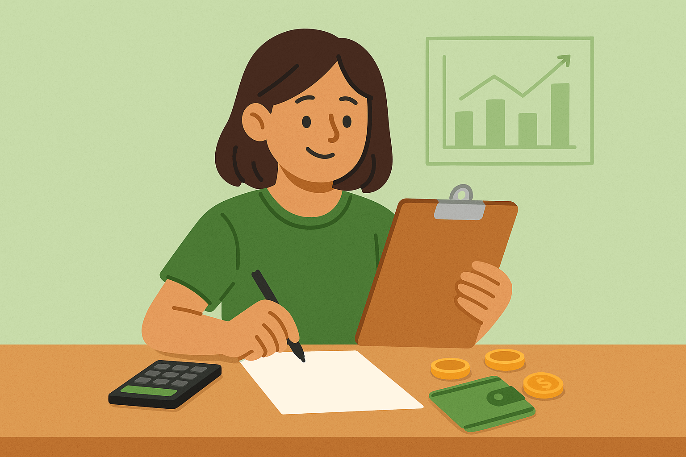

Tried the calculator above? Sulit, ‘di ba? That’s just one of the handy tools we made para mas madali ang life mo when it comes to money matters. Whether you’re figuring out your budget, saving up for an emergency, or planning your future goals — these tools are here to help. No need to guess or overthink — just input your numbers and let PesoBuddy do the work. Libre lahat, no sign-ups, and made especially for real Pinoy situations. So go ahead, explore the tools above and see how far your money can take you.
Take Control of Your Peso Now to Achieve Your Life Goals
Tutulungan ka naming i-manage ang pera mo gamit ang mga easy tips, smart strategies, at tools
Yaman na tatagal, freedom na pinaghirapanSimple, practical, and locally relevant
Tips at advices na gawa para sa lifestyle at realidad ng mga Pinoy
Build Your Emergency Fund
Start with ₱10,000 and slowly grow it until the total amount is equivalent to 3–6 months of your monthly gastos. Put it sa high-interest earning digital savings account (huwag sa daily wallet mo ha!) like Maya (up to 14%), SeaBank (up to 5%), GoTyme (around 5%), or CIMB GSave (up to 8%). Hanap ka ng walang lock-in at maintaining balance para flexible and hassle-free. Importante ‘to para you have access to the funds in case of an emergency.
Follow the 50-30-20 Rule for Balanced Finances
Budget wisely! Try the 50-30-20 rule: So, every sahod put 50% sa needs (rent, food, bills), 30% sa wants (kain sa labas, travel, hobbies, nomo), and 20% sa savings or investments. Simple pero solid ‘to for keeping your finances on track habang nag-eenjoy ka pa rin. Adjust mo ‘to based sa income mo, goals, or lifestyle—walang one-size-fits-all. Ang importante, may plano ka.
Start Investing Early
Kahit ₱1,000/month, malaking bagay na ‘yan if you start now. Thanks to compounding, mas ma-aga ka mag-invest, mas lalaki siya over time. Try mo index funds, UITFs, or kahit high-interest savings muna. Small steps lang muna, basta CONSISTENT. Wag mo hintayin dumami muna pera mo—start with what you have. Your future-self will thank you!
Track Every Peso
Know where your money goes! Use apps like Spendee, Toshl, Spreadsheet (Google Sheet or Excel), or kahit notebook lang para i-lista lahat ng gastos mo. Importante na you know kung saan na-pupunta and pera mo. Once you start tracking, mas madali mag-budget, mag-tipid, at mag-ipon. Consistent tracking builds awareness—and that’s the first step sa pag-ayos ng finances mo.
Eliminate High-Interest Debt
Unahin mong bayaran ang mga utang na mataas ang interest—like credit cards or personal loans. Usually nasa 20–30% ‘yan per year, sayang! Mas mabuting clear ka muna sa utang bago ka mag-invest. Once clear ka na sa utang, mas maluwag sa wallet at mas mabilis ka makakaipon or makaka-invest.
Automate Your Savings
Set up auto-transfer ng ₱2,000–₱5,000 every sweldo papunta sa savings mo. Para sure na hindi mo na magagastos pa, diretso ipon agad! It builds good habits without the effort. Habang di mo napapansin, lumalaki na ipon mo. Great way to build your emergency fund or investment fund na hindi stressful.
🔧 Try Our Free Tools
Budget Allocation Calculator
Break it down the smart way — savings, investments, and leisure.
Compound Interest Calculator
Watch you funds grow over time with using our interactive tools.
📰 Featured Articles
Fresh tips and guides to help you master your finances.
Emergency Funds: Why & How Much?
Discover why every Filipino needs an emergency fund and how to build one.
Read More →Digital Banks in the Philippines
Save smarter with digital banks — higher interest, no lines, anytime, anywhere access.
Read More →

How to Budget Wisely
Budgeting helps you control your money, not the other way around. Start today.
Read More →